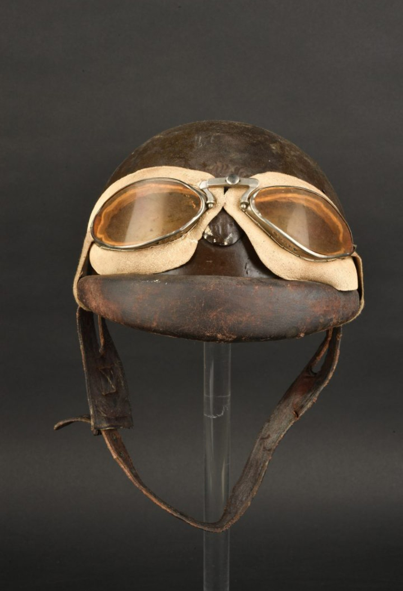
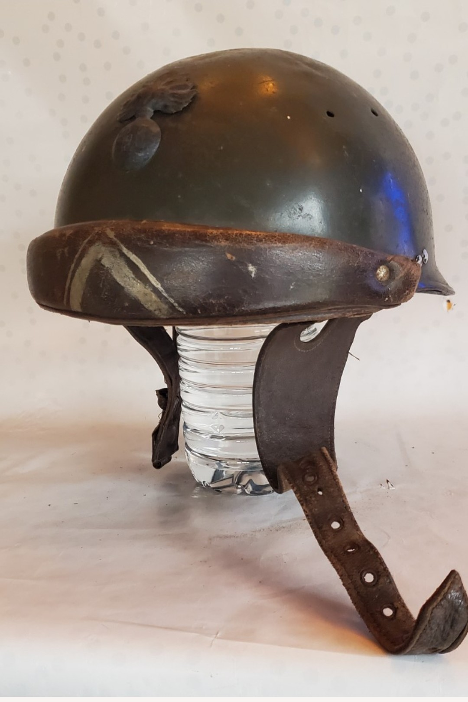

Le casque moto modèle 1935 est destiné aux troupes motorisées de l’armée française : motocyclistes, estafettes, gendarmerie mobile et unités rapides. Sa forme arrondie, sa petite visière et son intérieur cuir en font un casque emblématique de la période 1935–1940.

La vue de profil met en évidence la forme typique des casques moto de l’entre-deux-guerres : coque arrondie, visière courte, et profil aérodynamique adapté aux déplacements rapides.
Utilisé dès 1935, ce casque équipe les motocyclistes de l’infanterie, les estafettes, les unités motorisées et la gendarmerie mobile. On le retrouve dans de nombreuses photos de la mobilisation de 1939 et des combats de mai–juin 1940.